El índice que no encuentra trama

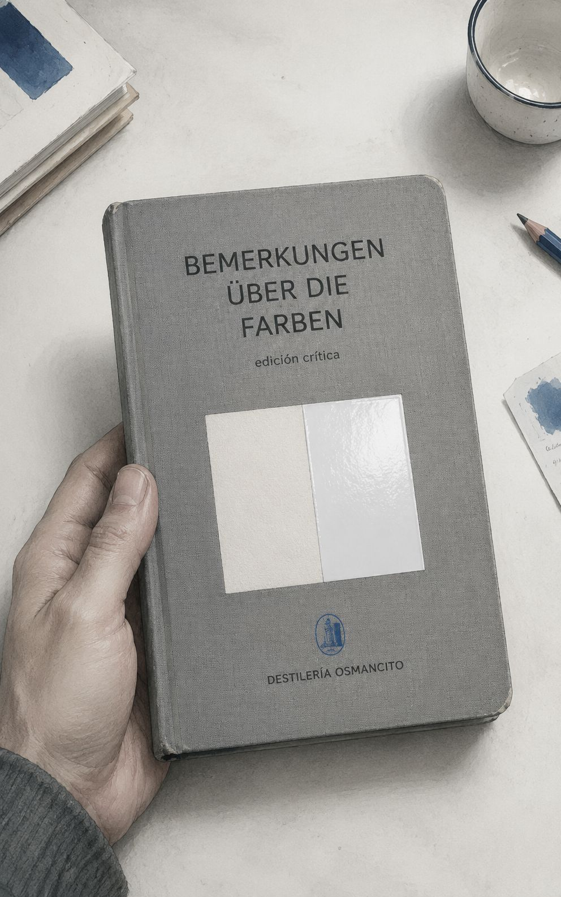
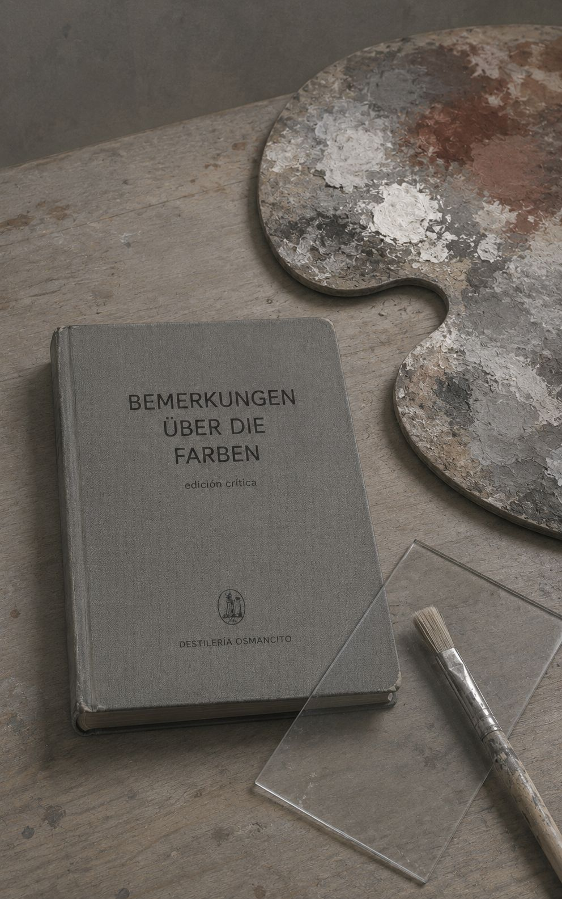
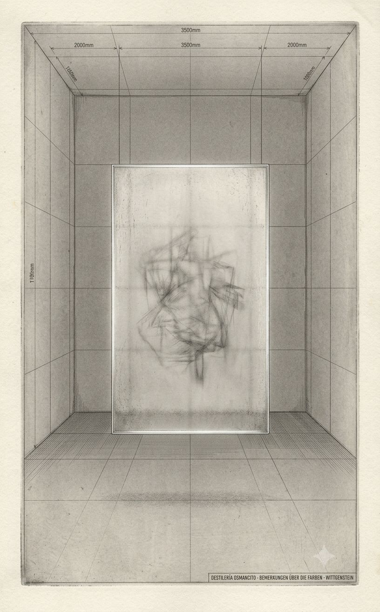
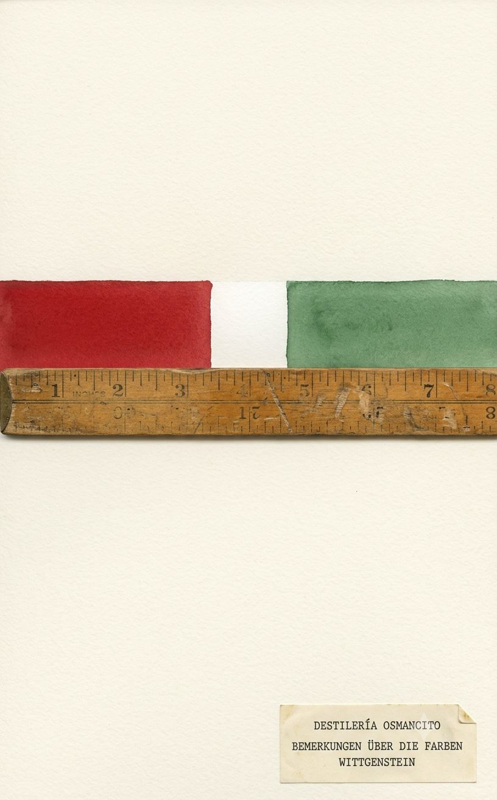
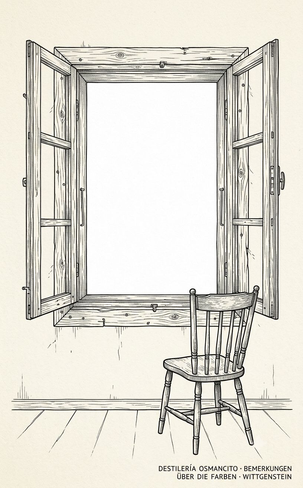
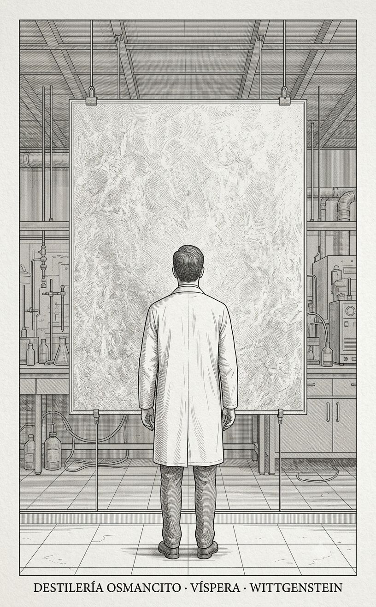
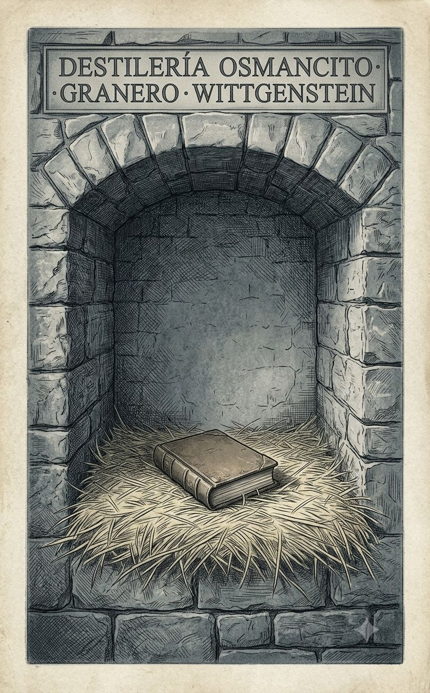
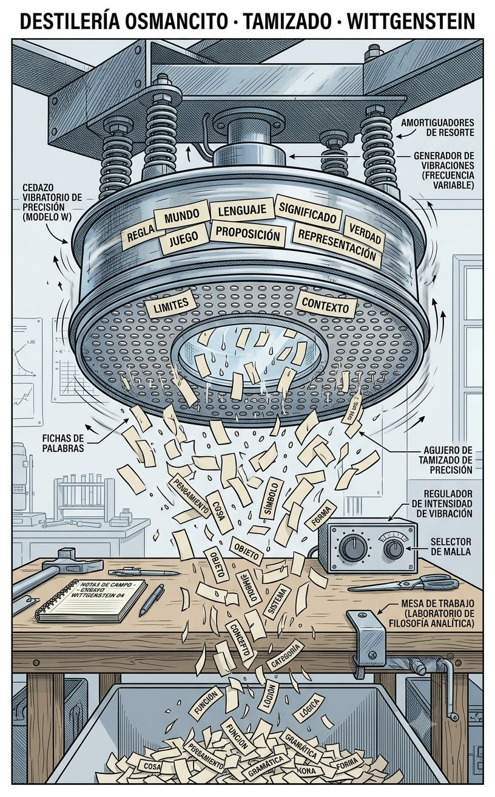
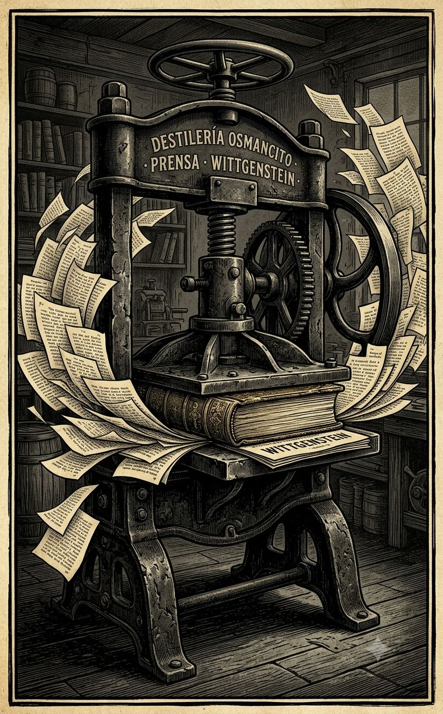
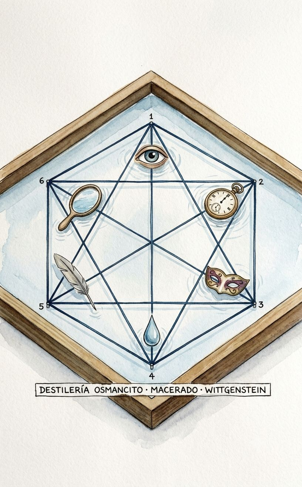
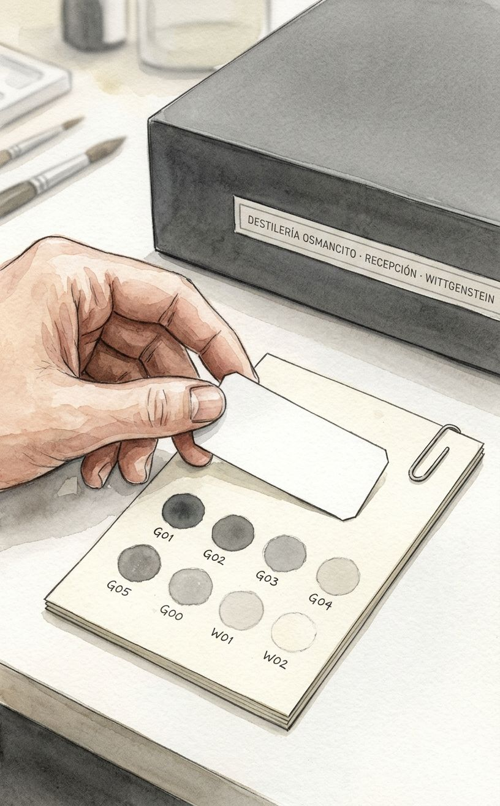
Un filósofo que pasó años derribando teorías del lenguaje termina sus últimos meses preguntando por qué no se puede imaginar un blanco transparente. La pregunta parece trivial hasta que uno intenta responderla y descubre que no puede — y que esa imposibilidad, no la física, es el verdadero objeto de estudio. El libro no explica el color: expone que casi todo lo que creemos saber sobre él es gramática disfrazada de percepción.
Un cuaderno delgado y sin currículum de portada, ordenado en números que se interrumpen, se repiten, dudan de sí mismos — como notas que alguien no llegó a limpiar antes de morir.
Esto no es un tratado sobre el color: es el residuo de una obsesión de los últimos dieciocho meses de una vida. Wittgenstein no pregunta qué es el color — pregunta bajo qué reglas decimos las cosas que decimos sobre él, y en ese desplazamiento mínimo cabe todo el libro. Nombrar este corpus como “reflexiones” ya es tomar partido: no resume una posición, persigue una gramática que se le escapa aforismo tras aforismo, sin llegar nunca a cerrarse.
Título — Bemerkungen über die Farben Autor — Ludwig Wittgenstein Año — 1977 (edición póstuma; escrito entre 1950 y 1951) Género — Ensayo filosófico, forma aforística Extensión estimada — 18.839 palabras, aproximadamente 75 páginas, 3 secciones (Teil I, II, III) Idioma original — Alemán Palabra más frecuente con contenido — Farbe (133 apariciones) / Farben (125). Confirma exactamente lo que el corpus declara ser: un libro que no deja de nombrar aquello que no logra definir.
El libro no narra: interroga. A lo largo de tres partes numeradas, Wittgenstein somete el vocabulario del color a una presión constante —¿puede existir un blanco transparente?, ¿es el verde una mezcla de azul y amarillo o una tercera cosa?, ¿qué significa que dos personas “vean” el mismo color?— sin nunca proponer una teoría que las resuelva. El método es el juego de lenguaje: cada pregunta se responde mirando cómo usamos las palabras, no mirando el mundo. Goethe y Runge aparecen como interlocutores constantes, citados y discutidos, casi como si el libro fuera una conversación tardía con la Farbenlehre. El ciego y el daltónico recorren el texto como figuras límite que ponen a prueba los conceptos normales de ver y nombrar.
Ludwig Wittgenstein — la voz que interroga, cita, se corrige a sí mismo. Goethe — interlocutor constante, autor de la Farbenlehre, fuente de citas y de desacuerdo. Runge — pintor citado por Goethe, origen de varias de las paradojas cromáticas del libro. Lichtenberg — citado por su observación de que pocos han visto el blanco puro. El ciego / el daltónico — figuras hipotéticas recurrentes, límites que exponen la gramática normal por contraste.
El corpus no tiene argumento en sentido narrativo: tiene una progresión de problemas. La Parte I abre con la pregunta de si “más claro que” es una relación temporal o lógica, y de ahí se ramifica hacia la imposibilidad del blanco transparente, la naturaleza de los colores primarios y la pregunta por un “pueblo” con conceptos de color distintos a los nuestros. La Parte II retoma varios de estos mismos problemas con variaciones —el brillo, el mate, el daltonismo como falta de un juego de lenguaje y no como defecto óptico. La Parte III, la más tardía, se desplaza hacia el problema del ver mismo: qué significa decir “veo un árbol”, si eso es un fenómeno o solo una manifestación, y qué relación guarda la ceguera con la posibilidad misma del concepto de visión. El libro cierra sin síntesis, en plena pregunta sobre la lógica de la comunicación entre videntes y ciegos.
Primer contacto: resistencia y fascinación en la misma respiración. El texto no se deja leer rápido — cada aforismo exige detenerse, y muchos parecen contradecir al anterior antes de que uno entienda que no contradicen, sino que rodean. Hay algo casi doloroso en ver a un pensador de esa magnitud negarse una y otra vez a la respuesta fácil, incluso cuando la respuesta fácil sería suficiente para cualquier otro. El corpus no da tregua ni la pide.
¿Es el color una propiedad del mundo o una regla del lenguaje sobre el mundo? El libro nunca lo resuelve — lo usa como motor.
La normalidad como concepto sin fondo: el daltónico, el ciego, el “pueblo” con otros conceptos de color no son desviaciones de una norma estable, sino la prueba de que la norma nunca estuvo tan fija como parecía.
Citar para disentir: Goethe y Runge sostienen el libro entero como estructura de referencia, y sin embargo Wittgenstein rara vez los cita para darles la razón del todo — la autoridad se invoca y se erosiona en el mismo gesto.
Un mapa de hilos rojos tendidos entre fichas numeradas sobre un corcho, pero los hilos no convergen en ningún punto central —se cruzan, se repelen, forman una malla sin nodo—; grabado técnico, línea de precisión cartográfica; una sola tensión visual: la ausencia de un centro donde toda malla debería anudarse; paleta de corcho pardo, hilo rojo apagado, fichas en blanco hueso; etiqueta: DESTILERÍA OSMANCITO · NARRACIONES · WITTGENSTEIN; estilo grabado; sin fotorrealismo; relación de aspecto 5:8.

Un estuche de joyero de terciopelo gris entreabierto, y dentro no una joya sino una esquirla de vidrio coloreado que emite su propia luz fría, autosuficiente, sin necesitar el resto del estuche; óleo sobre tabla, pincelada mínima y precisa; una sola tensión visual: el fulgor de la esquirla contra el vacío del terciopelo circundante; paleta de terciopelo gris profundo y el único acento cromático de toda la serie —un azul-verde que no debería existir según las propias reglas del corpus—; etiqueta: DESTILERÍA OSMANCITO · JOYERÍA · WITTGENSTEIN; estilo óleo editorial; sin fotorrealismo; relación de aspecto 5:8.

Una plomada de sondeo cayendo a través de capas de vidrio translúcido apiladas verticalmente, cada capa un poco más opaca que la anterior, y la plomada no encuentra lecho firme sino otra capa, y otra; grabado en línea con degradado de aguatinta; una sola tensión visual: la caída sin resolución, la sonda que no toca fondo porque el fondo es conceptual, no físico; paleta de grises estratificados, del gris casi blanco al gris casi negro; etiqueta: DESTILERÍA OSMANCITO · BATIMETRÍA · WITTGENSTEIN; estilo grabado con aguatinta; sin fotorrealismo; relación de aspecto 5:8.

Un compás de precisión trazando un círculo cromático perfecto sobre papel milimetrado, pero el compás no toca pigmento alguno —traza solamente relaciones, líneas entre puntos que representan reglas de uso, no colores—; ilustración técnica de alta precisión, línea limpia sobre retícula; una sola tensión visual: la geometría exacta que organiza algo que se resiste a ser geometría; paleta de tinta azul de ingeniero sobre papel cuadriculado hueso; etiqueta: DESTILERÍA OSMANCITO · APOLO · WITTGENSTEIN; estilo ilustración técnica; sin fotorrealismo; relación de aspecto 5:8.

Una mano abriendo los dedos y dejando caer, uno por uno, pequeños rótulos de palabras —“blanco”, “verde”, “transparente”— que se disuelven en el aire antes de tocar el suelo, mientras la mano queda finalmente vacía frente al vidrio suspendido; tinta y lavado, gesto suelto pero controlado; una sola tensión visual: el vocabulario disolviéndose en tiempo real; paleta de tinta gris y las últimas trazas de color de las palabras que se van; etiqueta: DESTILERÍA OSMANCITO · ESCUCHA DIONISÍACA · WITTGENSTEIN; estilo tinta y lavado; sin fotorrealismo; relación de aspecto 5:8.

El mismo vidrio suspendido de la atmósfera, pero ahora con una vibración apenas perceptible en su superficie, como si algo debajo latiera contra la calma aparente del análisis —ondas concéntricas mínimas, casi imperceptibles, que delatan tensión viva bajo la superficie fría—; óleo con veladuras, superficie inquieta bajo tratamiento sereno; una sola tensión visual: la quietud analítica que no logra ocultar del todo el pulso que la sostiene; paleta fría con un solo latido cálido en el centro; etiqueta: DESTILERÍA OSMANCITO · DIONISO · WITTGENSTEIN; estilo óleo con veladuras; sin fotorrealismo; relación de aspecto 5:8.

Una vista en corte transversal, como diagrama geológico, donde debajo del vidrio suspendido se revelan estratos de tierra distintos —uno con textura de aula de Cambridge, otro con la textura de un cuaderno de posguerra, otro con la aspereza de un manuscrito inacabado hallado tras una muerte—; grabado técnico con secciones etiquetadas al estilo de un atlas geológico decimonónico; una sola tensión visual: la superficie fría del vidrio sostenida sobre un subsuelo biográfico turbulento; paleta de sedimentos pardos y grises bajo el blanco frío de la superficie; etiqueta: DESTILERÍA OSMANCITO · HERMES · WITTGENSTEIN; estilo grabado geológico; sin fotorrealismo; relación de aspecto 5:8.

Una carta de menú en blanco donde las letras se forman con restos de pigmento seco recogidos de la paleta de las secciones anteriores, como si el menú se escribiera solo con lo que los otros instrumentos dejaron sin usar; ilustración editorial con textura de pigmento raspado; una sola tensión visual: el texto que emerge de residuos, no de intención previa; paleta de restos —grises, pardos, el azul-verde imposible reaparecido en fragmentos—; etiqueta: DESTILERÍA OSMANCITO · MENÚ EMERGENTE · WITTGENSTEIN; estilo collage analógico; sin fotorrealismo; relación de aspecto 5:8.

Una página vista de perfil, casi como corte arquitectónico, donde por un borde caen pequeñas anotaciones al vacío y por el otro borde crecen hacia afuera raíces de tinta que se extienden más allá del papel; grabado técnico en corte transversal; una sola tensión visual: dos direcciones opuestas de pérdida y expansión en el mismo borde; paleta de tinta negra sobre papel hueso, con un verde apagado en las raíces exteriores; etiqueta: DESTILERÍA OSMANCITO · MÁRGENES · WITTGENSTEIN; estilo grabado en corte; sin fotorrealismo; relación de aspecto 5:8.

Dos espejos enfrentados con una lupa entre ambos, y en el reflejo infinito que se genera, cada imagen sucesiva de la lupa es ligeramente más pequeña y más insegura que la anterior, hasta perderse en un punto que ya no es lupa sino solo mancha; óleo con veladuras sucesivas; una sola tensión visual: la certeza del primer reflejo disolviéndose en la repetición; paleta de plata fría y grises decrecientes; etiqueta: DESTILERÍA OSMANCITO · TESTIGO DEL TESTIGO · WITTGENSTEIN; estilo óleo con veladuras; sin fotorrealismo; relación de aspecto 5:8.

Una serpiente de Ouroboros dibujada no con escamas sino con el propio compás de Apolo, mordiéndose la cola en el punto exacto donde el trazo comenzó; ilustración técnica sobre retícula, con la línea del compás visiblemente reutilizada como cuerpo de la serpiente; una sola tensión visual: el instrumento de medir convertido en objeto medido; paleta de tinta azul de ingeniero, cerrada sobre sí misma; etiqueta: DESTILERÍA OSMANCITO · BUCLE · WITTGENSTEIN; estilo ilustración técnica; sin fotorrealismo; relación de aspecto 5:8.

Un umbral tallado en la misma pared, sin puerta física, donde algunas figuras difuminadas al fondo caminan a través de él sin notarlo y otras se detienen frente a él como ante un muro; grabado en línea con contraste marcado entre figuras; una sola tensión visual: el mismo umbral funcionando como paso franco y como obstáculo según quién lo mira; paleta de piedra gris y siluetas en tinta negra; etiqueta: DESTILERÍA OSMANCITO · UMBRAL DEL RECONOCIMIENTO · WITTGENSTEIN; estilo grabado arquitectónico; sin fotorrealismo; relación de aspecto 5:8.

Una fila de lentes antiguos de distintas épocas —monóculo victoriano, gafas de posguerra, lente de laboratorio contemporáneo— todos apuntando hacia el mismo vidrio suspendido de la atmósfera, y cada uno lo muestra con un tinte de época ligeramente distinto; ilustración editorial con variación cromática por lente; una sola tensión visual: un objeto inmóvil percibido de maneras irreconciliables según el instrumento que lo mira; paleta que varía de lente a lente sobre el mismo blanco central; etiqueta: DESTILERÍA OSMANCITO · HISTORIA DE LOS EFECTOS · WITTGENSTEIN; estilo ilustración editorial; sin fotorrealismo; relación de aspecto 5:8.

Todas las esquirlas de vidrio y muestras de color de las secciones anteriores fundiéndose en el aire para formar, por un instante, la silueta completa de un cuerpo humano transparente; óleo con fusión de veladuras múltiples; una sola tensión visual: la unidad que emerge sin borrar la distinción de sus partes, cada fragmento aún visible dentro de la forma total; paleta que reúne todos los tonos previos en un solo campo armonizado; etiqueta: DESTILERÍA OSMANCITO · SÍNTESIS · WITTGENSTEIN; estilo óleo de fusión; sin fotorrealismo; relación de aspecto 5:8.

Un punto de fuga clásico de perspectiva renacentista, pero en vez de líneas de arquitectura, son las líneas de mirada de todas las figuras anteriores —la que escucha, la que clasifica, la que desciende, la que mide— las que convergen ahí, en un punto que ninguna de ellas señaló a propósito; grabado técnico de perspectiva; una sola tensión visual: la convergencia involuntaria de miradas que se creían independientes; paleta de líneas doradas sobre fondo neutro; etiqueta: DESTILERÍA OSMANCITO · PUNTO DE FUGA · WITTGENSTEIN; estilo grabado de perspectiva; sin fotorrealismo; relación de aspecto 5:8.

Varias capas de papel semitransparente superpuestas, cada una con fragmentos de las imágenes anteriores apenas visibles, y en el espacio blanco entre las capas —no en ninguna de ellas— aparece una forma tenue que ninguna capa individual contiene; collage analógico con papel vegetal superpuesto; una sola tensión visual: una figura que solo existe en el intersticio, nunca en la superficie; paleta translúcida, capas de gris sobre gris; etiqueta: DESTILERÍA OSMANCITO · PALIMPSESTO · WITTGENSTEIN; estilo collage analógico; sin fotorrealismo; relación de aspecto 5:8.

Un alambique de cobre donde entra por arriba toda la materia acumulada de las imágenes previas —fragmentos, esquirlas, capas— y por abajo cae una sola gota perfecta, transparente, irreducible; grabado técnico con textura de metal pulido; una sola tensión visual: la desproporción entre la masa que entra y la gota que sale; paleta de cobre oscuro y la única gota en blanco absoluto; etiqueta: DESTILERÍA OSMANCITO · DESTILADO · WITTGENSTEIN; estilo grabado industrial; sin fotorrealismo; relación de aspecto 5:8.

La misma gota del destilado, pero ahora refractando la luz hacia tres direcciones distintas, cada una proyectando en el aire un boceto apenas esbozado de una imagen futura distinta —tres estilos, tres miradas, todas naciendo del mismo punto—; acuarela con proyecciones de luz prismática; una sola tensión visual: la unidad de origen abriéndose en pluralidad sin perder coherencia; paleta prismática controlada, tres tonos que comparten un mismo blanco base; etiqueta: DESTILERÍA OSMANCITO · DESTILADO DE IMÁGENES · WITTGENSTEIN; estilo acuarela prismática; sin fotorrealismo; relación de aspecto 5:8.